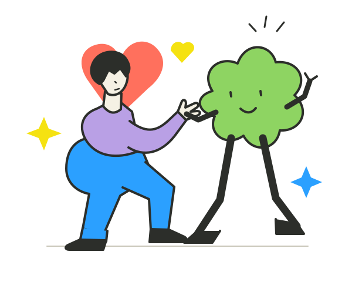
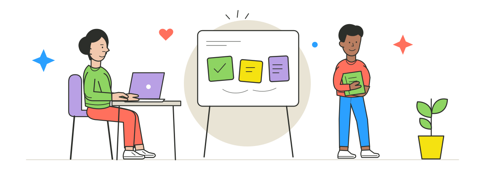
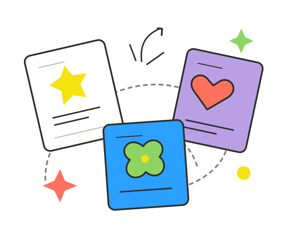
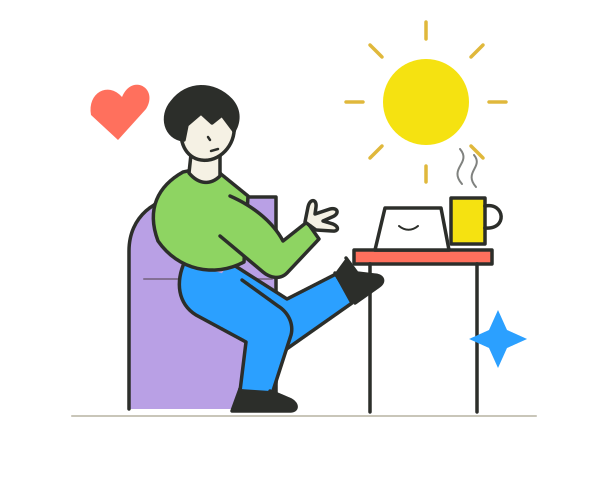

AI Agent / 概念探索
一个想法，
一起走远一点。
CoPilot · 让灵感走向行动
从模糊的念头到可推进的下一步。探索一个能理解意图、拆解任务，也懂得把决定权交还给你的 AI 工作伙伴。
A little curiosity. A lot of possibilities.
嗨，我是 CoCo 小克克，一名 AI 产品经理。
关心技术，也关心使用技术的每一个人。

A human behind the products
AI 产品经理 / CoCo 小克克
我关注技术怎样进入真实生活，也关心一个产品为什么值得存在。
这里是我的一小块互联网空间。我用产品探索和文字，记录对 AI、体验与人的思考，也给还没成形的想法留一点位置。
Ideas, taking shape
从一个小问题出发，探索 AI 能带来的不同。
概念探索 · 非已上线项目

AI Agent / 概念探索
CoPilot · 让灵感走向行动
从模糊的念头到可推进的下一步。探索一个能理解意图、拆解任务，也懂得把决定权交还给你的 AI 工作伙伴。

Knowledge × AI / 概念探索
知屿 · 让知识彼此相连
收藏只是开始。当一个具体问题出现，让散落的笔记、文章与想法重新连接，从“收藏过”走向“用得上”。

Product experience / 概念探索
日常之间 · 自然发生的 AI 体验
不是每件小事都需要一场对话。在恰当的时刻，给出刚刚好的帮助，把注意力留给生活本身。
Notes from a curious mind
以上为个人网站的产品思考草稿，持续整理中。
There's always another good question.
保持好奇，认真创造。
很高兴，你来到了这里。